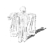

Mevlut’un Ortaokul Yılları
[Yazarın yeni romanı Kafamda Bir Tuhaflık’tan.
Romanın kahramanı Mevlut Karataş’ın
ortaokul yıllarının anlatıldığı bölüm.]
Duttepe Atatürk Erkek Lisesi, Duttepe’yi ve arkasındaki diğer tepeleri İstanbul’a bağlayan yolun başındaki alçak bir düzlüğün üzerine öyle bir şekilde yerleşmişti ki, Bokludere boyunca dizilmiş sonraki mahallelerde, hızla gecekondularla kaplanan diğer tepelerde, bahçelerinde çamaşır asan anneler, oklavayla hamur açan teyzeler, çayhanelerde okey ve kâğıt oynayan işsiz erkekler, okulun turuncu rengi binasını, Atatürk büstünü ve büyük bahçede jimnastik ve din hocası Kör Kerim’in denetiminde sürekli jimnastik yapan (ayaklarında lastik ayakkabı, üzerlerinde pantolon ve kollu gömlekle) öğrencileri çok uzaktan renkli ve hareketli küçük noktalar halinde görebilirlerdi. Kırk beş dakikada bir, uzak tepelerden işitilmeyen bir zil çalar ve yüzlerce öğrenci bir anda bahçeye dağılır, sonra işitilmeyen başka bir zil çalar, hepsi bir anda kaybolurdu. Ama her pazartesi sabahı Atatürk büstünün çevresinde toplanan bin sekiz yüz öğrencinin hep birlikte söylediği İstiklal Marşı tepeler arasında güçle yankılanır, civardaki on binlerce evden işitilirdi.
İstiklal Marşı söylenmeden önce, binanın giriş merdivenlerine çıkan lise müdürü Fazıl Bey, Atatürk’ten, vatan sevgisinden, milletten, unutulmaz eski askerî zaferlerden (Mohaç gibi kanlı ve fetihli olanları severdi) bahseden bir nutuk atar, öğrencilerden Atatürk gibi olmalarını isterdi. Lisenin yaşlı ve bozguncu öğrencileri kalabalıkta Mevlut’un ilk yıllarda anlayamadığı alaycı sözler söyledikleri, kimi terbiyesizler tuhaf, hatta çirkin sesler çıkardıkları için müdürün yanında dikilen muavini İskelet tek tek bütün öğrencileri polis gibi dikkatle gözlerdi. Bu aşırı denetim yüzünden Mevlut hem sağcı ve dindar, hem de solcu ve milliyetçi öğrencilerin (sağcı öğrencilerin hepsi dindar, solcuların hepsi milliyetçiydi) saygı ve hayranlık duyduğu ve kalabalık toplantılarda istediği zaman osurabilen muhalif ruhlu öğrenciyle ancak bir buçuk yıl sonra on dört yaşında okulun kurulu düzeninden şüpheye düştüğü günlerde tanışabilecekti.
Müdürün okulun ve Türkiye’nin geleceği konusunda kalbini en çok kıran şey bin sekiz yüz öğrencinin İstiklal Marşı’nı hep birlikte ve aynı anda söyleyememesiydi. Herkesin kendi köşesinde tek başına İstiklal Marşı’nı kendi bildiği gibi söylemesi, hatta bazı “dejenere yozların” hiç söylememesi müdürü çileden çıkarırdı. Bazan okul bahçesinin bir köşesindeki öğrenciler marşı bitirdiklerinde öteki köşedekiler yarısına gelmemiş olur, marşın hep birlikte, “tek bir yumruk” gibi söylenmesini isteyen müdür, yağmur kar aldırmaz, marşı bin sekiz yüz öğrenciye yeniden yeniden söyletir, bazı öğrenciler de bozgunculuktan ve inattan ahengi bozar, bu da gülüşmelere ve üşüyen vatansever öğrencilerle alaycı ve umutsuz bozguncular arasında kavgalara yol açardı.
İlk yıllarda siyasete hiç karışmak istemediği için Mevlut bu kavgaları uzaktan izler, arsızların şakalarına gülerken İskelet’e yakalanmamak için de yanaklarının içlerini ısırırdı. Ama az sonra ay yıldızlı bayrak göndere ağır ağır yükselirken suçluluk duygusuyla gözleri sulanır ve marşı içtenlikle söylerdi. Yaşı ilerledikçe ruhunda gelişen anarşistçe ve Batıni eğilimlere rağmen hayatının sonuna kadar nerede –hatta filmlerde bile– yükselen bir Türk bayrağı görse Mevlut’un gözleri sulanmaya devam etti.
Mevlut pazartesileri okuldaki bayrak töreninde müdürün istediği gibi, “her şeyi vatanı için yapan Atatürk” gibi olmayı da çok isterdi. Bunun için üç yıllık ortaokulu ve üç yıllık liseyi bitirmesi gerekiyordu. Bunu ne aileden ne de bu yaz sonu geldiği köyden kimse şimdiye kadar başaramadığı için, bu hedef, daha okulun ilk günlerinden Mevlut’un kafasında bayrak gibi, vatan gibi, Atatürk gibi hayali güzel, ulaşılması zor kutsal bir şey olarak kaldı. Düztepe, Kuştepe gibi gecekondu mahallelerinden okula gelen öğrencilerin çoğu ya sokak satıcılığı yapan babalarının veya bir esnafın yanında çalışıyor ve biraz daha büyüyünce okulu bırakacağını biliyor ya da bir fırıncının, bir kaportacının, bir kaynak ustasının yanına çırak girebilmek için sıra bekliyordu. Babaları inşaatlarda, derme çatma atölyelerde, yakınlardaki fabrikalarda işçilik yapanların çoğu da okulu bitirmeyi değil, bir an önce bir yere çırak girmeyi hayal ederdi.
Kimi isyan ve huzursuzluk günlerinde öğrencileri okula polis çağırmakla tehdit eden müdür Fazıl Bey’in en büyük derdi, ön sırada oturan iyi aile çocuklarıyla yoksul öğrenci kalabalığı arasında uyum ve düzen sağlayıp okulda disiplini tesis etmekti. Bunun için, pazartesileri bayrak töreninde veciz bir şekilde ifade ettiği bir felsefe geliştirmişti. “İyi bir eğitim, zenginle fakirin farkını ortadan kaldırır!” Fazıl Bey bu sözü ile fakir çocuklarına “İyi okuyup okulu bitirirseniz siz de zengin olursunuz” mu demek istiyordu? Yoksa “İyi okursanız ne kadar fakir olduğunuz belli olmaz” mı demek istiyordu; Mevlut anlayamamıştı. Müdür Atatürk Erkek Lisesi’nde eğitimin iyi olduğunu bütün Türkiye’ye kanıtlamak için lise takımını İstanbul Radyosu Liselerarası Bilgi Yarışması’nda dereceye sokmak istiyor, bu hedefe ulaşmak için vaktinin çoğunu yukarı mahallenin iyi aile çocuklarından kurduğu bir takıma (kıskanç ve tembeller arasında okul takımı “hafızlar” diye bilinirdi) Osmanlı Padişahlarının doğum ve ölüm tarihlerini ezberlettirmekle geçiriyordu. Müdür herkesin toplandığı bayrak törenlerinde tamirci, kaynakçı çırağı olmak için okulu bırakan eski öğrencilerin arkalarından aydınlanmaya ve bilime ihanet etmiş zayıf kişilere lanet eder gibi konuşur; hem okula gidip hem de Mevlut gibi öğleden sonraları yoğurt satanları azarlar; para kazanma derdine düşmüş öğrencileri doğru yola çekmek için, “Türkiye’yi pilavcılar, satıcılar, döner kebapçılar değil, bilim kurtaracak!” diye bağırırdı. Einstein de yoksuldu; hatta ortaokulda fizik dersinden sınıfta kalmıştı, ama üç beş kuruş kazanmak için okulunu asla bırakmamış, kazanan da o ve milleti olmuştu.
* * *
İskelet. Müdürümüzün öğrencilerimizi eğitime teşvik için iyi niyetlerle söylediği sözlerin yanlış anlaşılmaması için izninizle araya giriyorum. Duttepe Atatürk Erkek Lisemiz aslında Mecidiyeköy ve civarındaki yukarı mahallelerdeki modern ve Avrupai kooperatif evlerinde yaşayan memur, avukat ve doktor çocukları iyi bir milli eğitim alsınlar diye kurulmuştur. Ama ne yazık ki son on yılda arkalardaki boş tepelere kanun dışı yöntemlerle yayılan gecekondu mahallelerinden gelen Anadolulu yoksul çocuk sürülerinin işgaline uğrayınca bu güzel liseyi yönetmek neredeyse imkânsızlaşmıştır. Satıcılık yapıp okula gelmeyen, bir işe girip okula kaydını silen, hırsızlık, darp, öğretmeni tehdit ve taciz gibi suçlar işleyip okuldan atılan öğrenci kalabalığına rağmen sınıflarımız tıkış tıkıştır. Otuz öğrenci için yapılmış modern sınıflarda maatteessüf elli beş kişi ders yapar, iki kişilik sıralarda üç öğrenci dirsekleşerek oturur, teneffüslerde koşanlar, yürüyenler, oynayanlar birbirleriyle durmadan çarpışan arabalar gibi çarpışır. Zil çalınca, bir kavga çıkınca ve telaş olunca koridor ve merdivenlerdeki izdihamın neticesinde sıkışanlara, ezilip bayılan zayıf öğrencilere öğretmenler odasında üzülerek kolonya veririz. Bu kadar kalabalık bir ortamda öğrenciye dersleri anlatarak değil ezberleterek öğretmek haliyle daha etkili bir yöntemdir. Çünkü ezber hem çocuğun hafızasını geliştirir, hem de ona büyüklerine ve otoritesine saygı duymayı öğretir. Milli Eğitim Bakanlığımızın ders kitapları da aynı mantıkla yazılmıştır. Türkiye beş bölgeden oluşur. İneğin işkembesi dört kısımdan yapılmıştır. 1538 Preveze Deniz Muharebesi iki aşamaya ayrılır. Dünyada beş kıta ve 1699 Karlofça anlaşmasında yedi madde vardır. Osmanlı Devleti ve fetihleri beş nedenden bir duraklama devrine girmiştir. Türk alfabesinde yirmi dokuz harf, suyun içinde de iki eleman vardır.
* * *
Orta bir ile orta ikinin ilk yarısında bir buçuk okul yılı, sınıfta nerede oturacağı konusunda Mevlut derin kararsızlıklar geçirdi. Bu sorunu çözmek için çaba harcadığı zamanlarda hayatta ne yapmalı sorusuna cevap arayan eski filozoflar gibi bunalımlara kapılıyordu. Okula başlamasının birinci ayında, müdürün dediği gibi “Atatürk’ün gurur duyacağı bir bilim adamı” olacaksa, defterleri, kravatları ve ev ödevleri düzgün ve tamam olan yukarı mahallenin iyi aile çocuklarıyla arkadaşlık etmesi gerektiğini anlamıştı. Hem kendi gibi gecekonduda oturan (öğrencilerin üçte ikisi) hem de derslerde çok başarılı olan bir öğrenciyle Mevlut henüz karşılaşmamıştı. Kendi gibi, hakkında “Aman bu çok akıllı çocuk, okusun” dendiği için gecekondu mahallesinde yaşamasına rağmen okulu ciddiye alan birkaç şaşkın öğrenciyle bahçede rastlaşmıştı, ama başka sınıflarda okuyan ve “inek” diye aşağılanan bu yalnız ruhlarla lisenin mahşeri kalabalığında iletişim kuramamıştı. Bunun bir nedeni, “inek”lerin sırf onlar gibi gecekonduda yaşadığı için Mevlut’a şüpheyle bakmasıydı. Mevlut ineklerin aşırı iyimser hayat görüşlerinin çürük olduğunu seziyordu: Ortaokul I Coğrafya kitabını ezberlerse ileride zengin olacaklarını sanan bu “akıllı” çocukların aslında aptal olduklarını Mevlut hissediyor ve onlara benzemek istemiyordu hiç.
Ön sıralarda oturan ve ödevlerini düzenli yapan bazı iyi aile çocuklarıyla arkadaşlık etmek, onların yanına oturmak Mevlut’un kendini daha iyi hissetmesine yol açıyordu. Ön sıraya geçebilmek için sürekli öğretmenlerin gözünün içine bakması, onların başladığı, ama eğitici bir mantıkla sonunu getirmediği cümleleri ağızlarından kapıp yüksek sesle bitirmesi gerekiyordu. Mesela tarihçi Ramses (gerçekten mumyaya benzerdi) “Atatürk, –ne mutlu neyim demiştir?” diyordu ve Mevlut “Türküm diyene!” diye cümleyi hemen tamamlıyor, ve “Aferin!” demese bile Ramses’in bakışlarından Mevlut’u onayladığı hemen belli oluyordu. Öğretmen bir soru sorunca cevabını bilmese de Mevlut bir cevabı varmış gibi iyimser bir edayla parmağını sürekli kaldırıyordu. Tıpkı köydeki okulda olduğu gibi Mevlut derslerde kollarını göğsünün üzerinde kavuşturup hiç kıpırdamadan heykel gibi oturuyor, sürekli parmağını kaldırıyor, bazan kendini tutamayıp “Öğretmenim, öğretmenim, ben!” diye sesleniyordu. Bu iyi niyetli davranışları sayesinde müdürün iyi eğitimin zengin ile fakir arasındaki farkı ortadan kaldıracağı yolundaki teselli edici nutuklarının kanıtı olarak ön sıralarda kendisine geçici de olsa bir yer bulabiliyordu.
Ama aralarına girmeye çalıştığı yukarı mahallenin apartman çocukları da tuhaftı, insanın kalbini her an kırabilirlerdi. Orta birde, Mevlut’un ön sırada yanında oturma ayrıcalığı elde ettiği Damat karlı bir gün kalabalık teneffüshanede futbol oynayan (eski gazetelerden iple sıkıştırılmış bir top ile, çünkü okula futbol topu sokmak yasaktı), çılgınca koşuşturan, bağıran, kavga eden, toz içinde güreşen, itişerek birbirlerini pataklayan ve pandikleyen ve kumar oynayan (futbolcu resimleri ve üçe bölünmüş sigara parçalarıyla) kalabalığın içinde bir an ezilme tehlikesi atlatmıştı. Bir an öfkeye kapılan Damat, Mevlut’a dönmüş, “Köylüler doldurdu bu okulu,” demişti, “babam kaydımı aldıracak, başka bir okula gideceğim ben.”
Mevlut Damat’ın, gecekondulardan gelen öğrencilerden şikâyet etmesine rağmen sürekli yanında oturan arkadaşının gecekonduda yaşadığını hiç fark etmediğini, hiç düşünmediğini, hatta hayal bile etmediğini o gün anlamıştı.
* * *
Damat. Mevlut’un köyden yeni geldiğini ve gecekonduda yaşadığını bilmiyormuş gibi yapmamı Mevlut da bir çeşit nezaket olarak alırdı. Damat adını bana kravatımın ve ceketimin şıklığına aşırı özendiğim ve kadın doktoru olan babamın tıraş sonrası losyonunu bazı sabahlar bolca sürerek sınıfa geldiğim için okulun ilk ayında taktılar. Kir, nefes ve terle leş gibi kokan sınıfta koku herkesin içini açar, losyonu sürmediğim günler bana “Damat, bugün düğün yok mu?” diye sorarlardı. Bazılarının sandığı gibi çıtkırıldım değilimdir hiç. Bir keresinde tıraş losyonunun kokusunu daha iyi koklamak bahanesiyle burnunu boynuma doğru sanki ben ibneymişim gibi alaycılıkla yaklaştıran bir maskarayı çenesine çaktığım sert bir yumrukla devirerek, arka sıralarda oturan kabadayıların saygısını kazanmıştım. Pinti babam özel okul parasını vermediği için burdayım.
Bir keresinde derste bu konularda dertleşiyorduk ki: “1019, Mevlut Karataş, çok konuşuyorsun arkaya geç!” demişti biyoloji hocası İri Melahat.
“Hocam hiç konuşmuyorduk!” demiştim ben, Mevlut’un sandığı gibi şövalye ruhlu olduğum için değil, Melahat’in benim gibi bir iyi aile çocuğunu asla arka sıraya sürgün etmeyeceğini bildiğim için.
* * *
Ama Mevlut arka sıraya atıldığı için fazla dertlenmedi. Daha önceleri de arkaya atılmıştı, ama usluluğu, saf ve çocuksu yüzü ve sürekli parmak kaldırması sayesinde bir yolunu bulup ön sıralara sızabiliyordu. Bazan bir öğretmen, sınıftaki yoğun gürültüye karşı önlem olarak bütün sınıfın yerini değiştirirdi. Tatlı yüzlü Mevlut böyle zamanlarda öğretmenin gözlerinin içine aşırı istek ve itaatle bakarak en öne oturmayı başarır, ama daha sonra kör talih onun yeniden arka sıraya atılmasına neden olurdu. Damat bir başka seferde iri memeli biyoloji hocası Melahat’ın Mevlut’u yeniden arkaya yollama kararına cesaretle itiraz etmişti.
“Hocam, otursun işte önde; ne var, çok seviyor sizin dersinizi.”
“Görmüyor musun sırık gibi boyu var,” demişti zalim Melahat. “Arkasındakiler onun yüzünden tahtayı göremiyor.”
İlkokulu bitirdikten sonra, babası boşu boşuna Mevlut’u bir yıl köyde tuttuğu için, Mevlut sınıf ortalamasından yaşlıydı. Bir de ortalamadan çok daha büyük bir gövdesi vardı. Mevlut ön sıradan arkaya dönerken utanır, yeni yeni alıştığı otuz bir çekme huyu ile iri gövdesi arasında kafası tuhaf bir ilişki kurardı. Mevlut’un aralarına dönüşünü arka sıradakiler alkışlarla ve “Mevlut yuvaya!” sloganlarıyla karşılarlardı.
Arka sıralar haydutların, tembellerin, kafasızların, çaka çaka başı dönen umutsuzların, iri yarı kabadayıların, yaşlıların ve yakında okuldan atılacakların yeriydi. Bir iş bulup okulu bırakanlar da yavaş yavaş arka sıralara sürülenler arasından çok çıkar, ama bazı öğrenciler de okul dışında hiç iş bulamadan arka sırada yaşlanırdı. Bazıları zaten suçlu, aptal, yaşlı ya da fazla iri yarı olduklarını bildikleri için, okulun ilk gününden arka sıraya kendiliğinden gider otururdu. Mevlut gibi başka bazıları ise, arka sıraların kendileri için kötü bir kader olduğunu bir türlü kabul edemez, asla zengin olamayacağını ancak hayatının sonunda anlayabilen bazı yoksullar gibi, uzun çabalardan ve hayal kırıklıklarından sonra acı gerçeği kavrarlardı. Son iki sırada oturanların yaş ortalaması Mevlut’un bir kere yaptığı hesaba göre (orta birinci sınıfa gitmenin yaşı on iki olmasına karşılık) on dört buçuktu. Başta tarih hocası Ramses olmak üzere pek çok öğretmen arka sıralara seslenmenin, oralarda oturan öğrencilere bir şey öğretmeye çalışmanın beyhudeliğini tecrübeyle biliyorlardı. Başkaları ise (mesela Mevlut’un yavaş yavaş ve farkına varmadan âşık olduğu genç ve ürkek İngilizce hocası Eda Hanım) arka sıralarla bir çatışmaya girmekten, herhangi bir öğrenciyle tartışmaktan korktukları için o yöne neredeyse hiç bakmazlardı bile. Mevlut birinci sınıfın ilk aylarında Eda Hanım’la göz göze gelebilme mutluluğu için de ön sıralarda oturmayı çok istemişti.
Hiçbir öğretmen, bazan bin sekiz yüz erkeği aynı anda korkutabilmeyi başaran müdür bile, arka sıralarla doğrudan çatışmaya girmek istemezdi. Çünkü bu gerginlikler süratle bir kan davasına dönüşebilir, yalnız arka sıralar değil, bütün sınıf o öğretmene karşı saldırıya geçebilirdi. Bütün sınıfı öfkelendiren hassas konu, gecekondu mahallelerinden gelen öğrencilerin şivelerinin, tiplerinin, bilgisizliklerinin ve yüzlerinde her gün ortanca çiçekleri gibi kıpkırmızı açan sivilcelerin öğretmenler tarafından alay konusu yapılmasıydı. Bazı öğrenciler derslerde öğretmenlerin anlattıklarından çok daha eğlenceli hikâyeler anlattıkları, sürekli şakalar yaptıkları için öğretmenler onları cetvelle döverek, aşağılayarak itibarsızlaştırmak, susturmak isterlerdi. Bir dönem herkesin nefret ettiği genç kimya öğretmeni Fiyaka Fevzi kurşun oksitlerin formülünü yazmak için tahtaya her dönüşünde tükenmez kalem içleri boşaltılarak yapılan üfleme borularından kurşun gibi yağan pirinç tanelerine hedef olmuştu. Çünkü sindirmek istediği Doğulu bir öğrencinin (o zamanlar kimse Kürt kelimesini kullanmazdı) şivesi ve kıyafeti ile alay etmişti.
Arka sıraların kabadayıları bazan sırf nam olsun diye, bazan zayıf buldukları ürkek öğretmeni korkutmanın keyfi için, bazan da yalnızca içlerinden öyle geldiği için hocanın sözünü de keserlerdi:
“Yeter hocam, bu ders çok tıraşladın, sıkıldık artık, biraz da Avrupa seyahatinizden bahsetsenize bize!”
“Hocam, sen gerçekten ta İspanya’ya kadar tek başına trenle mi gittin?”
Arkalardakiler, yazları bahçe sinemalarında perdedeki film hakkında sürekli konuşanlar gibi, derste olup bitenler hakkında hiç durmadan yüksek sesle konuşur, hikâyeler anlatır ve hep birlikte öyle gürültüyle kahkahalar atarlardı ki, tahtada soru soran öğretmen ile ona birinci sıradan cevap veren öğrenci bazan birbirini işitemezdi. Mevlut arka sıralara her sürgün edilişinde, kürsüde öğretmenin ne anlattığını zorlukla takip ederdi. Ama yanlış anlaşılmasın, Mevlut için en mükemmel okul mutluluğu, hem arkadakilerin yaptığı şakalara gülebilmek hem de Eda öğretmeni dinleyebilmekti.
* * *
Mustafa Efendi. Mevlut yazın benle köye geldi elbette. Ertesi sonbahar İstanbul’a döndüğümüzde Orta II’de hâlâ sokaklarda “Yoğurtçu!” diye bağırmaktan utanıyordu ama sırtına sırığı alıp yoğurt kovalarını ve boza güğümlerini taşımaya artık alışmıştı. Öğleden sonraları tembihlediğim gibi tek başına bir yerden başka bir yere, mesela Beyoğlu’nun arka sokaklarındaki bir lokantadan Sirkeci’deki depoya boş tepsileri taşır, sonra depodan aldığı dolu yoğurt tepsilerini ya da Vefa’dan aldığı işlenmemiş boza güğümünü Beyoğlu’na, Rasim’in kızarmış yağ ve soğan kokan yerine bırakır ve Duttepe’ye dönerdi. Bazı akşamlar benimle bozaya geliyor, bazı akşamlar evde Cin ile birlikte kalıp ders çalışırken uyuyakalıyordu. Uyuduğunu gören Cin pencereden içeri Mevlut’un rüyasına girerdi. Akşamları eve geldiğimde Mevlut’u hâlâ masanın başında tek başına çalışırken bulursam, “Maşallah bizim köyden çıkan ilk profösör sen olacaksın bu gidişle” derdim. İyi çalışmışsa, “Baba beni dinler misin şimdi” der, gözlerini tavana diker, dersini ezberden okumaya başlardı. Bir yere takılınca, gözünü tavandan bana çevirirdi. “Okuma yazma bilmez babandan medet umma evladım, ezberin benim yüzümde yazmıyor” derdim. Ortaokulun ikinci yılında okuldan da, satıcılıktan da hiç soğumamıştı. Kimi akşamlar, “Ben seninle bozaya geleceğim, yarın okul yok!” derdi. Sesimi çıkarmazdım. Bazı günler de, “Yarına dersim var, ben okuldan doğrudan eve gideceğim,” derdi. Biz bu gidişle değil İstanbul’da, köyde bile ev sahibi olamayacağız demezdim. Çünkü evladım ne kazanıyorsa hepsini babasına veriyor, amcaoğulları Korkut ile Süleyman gibi cep harçlığı, kitap defter parası bahanesiyle babasından hiç para kaçırmıyordu.
* * *
Mevlut Atatürk Erkek Lisesi öğrencilerinin çoğu gibi, okul dışı hayatını sır gibi saklıyor, son dersten çıktıktan sonra yaptıklarını kendisi gibi satıcılık yapanlarla bile paylaşmıyordu. Bazan bir öğrenciyi, civar köylerden Sarıkayalı Nusret’e olduğu gibi, babasıyla yoğurt satarken sokaklarda görür, ama görmezlikten gelir, ertesi gün sınıfta karşılaştıklarında da hiçbir şey olmamış gibi davranırdı. Ama çocuğun nasıl ders çalıştığını, satıcı olduğunun derslerde belli olup olmadığını dikkatle gözlerdi de. Babasıyla birlikte elma-portakal satan Erzincanlı bir sınıf arkadaşını da Şişli’nin arka sokaklarında üç tekerlekli bir manav arabasını iterken görmüş, babası tarafından azarlanan çocuğu görmezlikten gelmişti. At arabasını atın koşumundan tutarak süren babasıyla sokak sokak gezip eski gazeteler, boş şişeler, teneke yığınları toplayan Mardinli’ye de yıl sonunda Tarlabaşı’nda karşılaştıklarında dikkat etmişti Mevlut. Yüzünde hulyalı bir ifade, derslerde sürekli pencereden dışarıya bakan çocuğun orta ikiye başlamasından dört ay sonra yok olduğunu, artık hiç okula uğramadığını ve kimsenin ondan ve yokluğundan bir kere bile bahsetmediğini bir gün fark etti Mevlut ve bir iş bulup, çıraklığa başlayıp ortaokuldan ayrılan bütün arkadaşlarına yaptığı gibi, hafızasının onu da kısa bir süre sonra sonsuza kadar unutacağını anladı.
Sınıf arkadaşlarını birdenbire kaybediyor olmak Mevlut ’ta okulu sevmek, onu bir çeşit ev gibi benimseyebilmek için öğretmenlere daha da yakın olma ihtiyacının gelişmesine yol açtı. Böylece farkına bile varmadan genç İngilizce hocası Eda Hanım’a iyice bağlandı. Eda Hanım’ın beyaz bir teni, iri yeşil gözleri ve kütüphanede nöbetçilik yaparken giydiği yeşil yapraklı bir önlüğü vardı. İngilizce kelimeleri söylerken Mevlut onun başka bir âlemden geldiğini anlıyordu. Kitaplara meraklı olduğu için, Eda öğretmen bazı günlerde kütüphane yöneticiliği de yapıyordu. Mevlut o kütüphanedeyken tek başına gidip kitap almayı çok hayal etmişti, ama kütüphane ortaokullara yasaktı. Mevlut öğretmenin ilgisini sürekli onun güzel yeşil gözlerinin içine bakarak ve dersi aşkla dinleyerek çekiyordu. Ortaokul ikinci sınıfın ilk yarısı biterken beklenmedik bir şekilde Eda öğretmen tarafından sınıf başkanı seçildiği ilan edilince Mevlut kendine bile itiraf edemediği gizli aşkının karşılıksız olmadığını hissetti.
Başka pek çok lisede olduğu gibi Atatürk Erkek Lisesi ’nde de, eskiden “mümessil” denilen sınıf başkanlığı görevi öğrencilerin dertlerini hafifletmekten çok, öğretmenlerin sınıfa hakim olmasına yardım etmek için icat edilmişti. Sınıftaki yaramazlara, kural tanımazlara gücü yetmeyen bir hocanın tutacağı en mantıklı yolun (tıpkı uzak ve dağlık bölgelere gücü yetmeyen Osmanlı padişahları gibi) arka sıralardaki kabadayılar ve yaşlılarla iktidarını paylaştırması olduğunu okul yöneticileri biliyorlardı. Sınıf başkanı bu yüzden öğrenciler tarafından değil, öğretmenler tarafından seçilirdi. Bazan modern ve Avrupai gözükmek için oylama yapılır, ama oyların sayımı değil, kimin başkan olduğu ilan edilirdi yalnızca. Hem ön sırada oturduğu, hem de sınıf ortalamasına göre iri gövdeli olduğu için sınıf başkanlığına Mevlut’un seçilmesi yerindeydi!
Eda öğretmen “Sınıf başkanımız Mevlut Karataş’tır” deyince Mevlut kulaklarına inanamadı ve arka sıraların iğneleyici sözlerine aldırmadan “Şeref duyarım hocam!” deyip görevi kabul etti. Kalbi küt küt atıyordu. Sınıf başkanının yoklama yapmak, hoca gelmeden önce azgınlık yapan sınıfı sakinleştirmek, ödevleri toplamak, sobanın kömürünün yeterli olup olmadığını denetlemek, okul-aile birliğine, Kızılay’a ve Atatürk heykeli derneğine verilecek yardımları toplamak gibi pek çok görevi vardı. Başkan bu işleri yaparken ve para toplarken yumruklarını kullanabilirdi. Ama sınıf başkanının esas görevi, öğretmenin söz geçiremediği, elle veya cetvelle vurursa karşılık almaktan korktuğu haydutları ders sırasında tekmeyle, tokatla, tehditle susturup dersin akışına yardım etmekti. Eda öğretmen gibi disiplinsizlik ve gürültü karşısında aciz kalan kadın öğretmenlerin çok ihtiyaç duyduğu bu hizmeti vermeye –özellikle öğretmenin gençliği güzelliğine göre– arka sıralardan pek çok aday çıkar, bazıları kadın öğretmenlere yardım olsun diye derslerde kendiliğinden yerlerinden kalkıp sınıfın huzurunu bozan ufaklıkları, enselerine tokat atarak, kulaklarını çekerek yola getirirlerdi. Zarif Eda öğretmenin derslerde disiplini koruyan böyle pek çok koruyucu hayranı vardı. Bu gönüllüler verdikleri hizmeti Eda öğretmen fark etsin diye, yaramaz öğrencinin sırtına sıkı bir yumruk indirmeden önce yüksek sesle “Dersi dinlesene ulan!” ya da “Öğretmene saygısızlık etme bakayım!” diye bağırırlardı. Eda öğretmenin, arka sıralara hiç bakmasa bile bu hizmetlerden memnun olduğunu fark ettiğinde Mevlut kıskançlığa kapılır, kendi de bir iki gürültücüyü dövmek isterdi. Defalarca çiğneyeceği önemli bir hayat kuralını da Mevlut o günlerde öğrendi: Kıskançlık acısı çekmek istemiyorsa herkesin beğendiği güzel kadınlarla ilgilenmemeliydi.
Mevlut başkanlığı ile yeterince gururlanamadan İskelet sınıf başkanlarını toplayıp onlara özel bir yeni görevleri olduğunu anlattı. Geliri kıt okul yönetimi bir kooperatif kurmuş, öğrencilere simit satıyordu. Sattıkları simit çok temiz ve sağlıklıydı. Ama öğrenciler, kapı ve duvar boyunca dizilen sokak satıcılarından kirli ve ucuz simit almayı tercih ediyorlardı. İskelet sokak satıcılarının simidinde mikrop, pislik ve kolera kalıntıları bulunduğunu bir bayrak töreninde bütün okula anlatmıştı ama çoğunluk onu dinlemiyordu. Sınıf başkanlarının bir yeni görevi teneffüslerde alçak okul duvarı boyunca, bir hapishanedeki nöbetçiler gibi aşağı yukarı yürüyüp, satıcılardan alışveriş edenleri durdurmaktı.
İskelet sınıf başkanlarına bekçilik görevi verirken, Türk ordusu ve bürokrasisinin sorun çıkan bölgeye orantısız miktarda adam-asker-polis sevketme ilkesini uygulamıştı yalnızca. Mevlut uzun orta teneffüste bahçe duvarına yetişince kalabalığı gördü ve hiç kimseyi durduramayacağını anladı. Gövdeleri kendisinden iki kere büyük, bıyıklı, sivilceli liseliler Mevlut’un babası yaşındaki satıcılardan yoğun bir şekilde alışveriş ediyorlardı. Duvar boyunca dizilmiş simitçiler, leblebi-çekirdekçiler, macuncular, pamuk helva satıcıları hiç yasak yokmuş gibi bağıra çağıra satış yapıyorlar, aceleci bir öğrenci topluluğu da her şeyi telaşla ve hızla satın alıyordu. İskelet’in ve müdürün yasaklarının onca sınıf başkanına rağmen uygulanamamasına Mevlut önce şaştı. (Eda öğretmen acaba bu duruma ne derdi?) Günler sonra bu imkânsızlığın kendisinin anlayamadığı esrarengiz bir nedeni olduğuna hükmetti. Birkaç hafta sonra da aklının ermediği bu esrarengiz nedeni kabul etti. Sigara içen, bıyıklı ve yaşlı sınıf başkanlarından biri, Mevlut’a alışveriş eden, yasak çiğneyen bir öğrenciymiş gibi davranarak numarasını sordu. Bu Mevlut’un iktidarsızlık kâbusunu daha da derinleştirdi ve Mevlut Eda öğretmenin onayını kaybetmekten korktu. Bazan arsızca alışveriş eden (üç dört simit birden) bir öğrenciye –kendisinden daha küçük, gözlüklü, sinek gibi birine– bağırıp çağırmak, onu korkutmak, numarasını almak geliyordu içinden, ama bir rüyadaki gibi ağzını açıyor ve hiç sesi çıkmıyordu. Karlı yağmurlu 1971 kışında pek çok gün öğrenciler bahçeye hiç çıkmadı. Mevlut yüzlerce çocuğun delirtici bir gürültü çıkardığı teneffüshaneden bahçeye bakarken, ne duvar boyunca dizilen satıcıları görebildi, ne de sınıf başkanı olduğunu hatırladı.
1971’in mart ayında bir askeri darbe oldu, yılların başbakanı Demirel can derdiyle çekildi. Devrimci örgütler bankaları soyuyor, diplomatları kaçırıp rehin alıyor, devlet de ikide bir sıkıyönetim ve sokağa çıkma yasağı ilan ediyor, askerler polisler sürekli evleri arıyordu. Şehrin duvarlarını arananların, şüphelilerin resimleri kaplamış, kaldırımlardaki kitapçı tezgâhları yasaklanmıştı. Bunlar sokak satıcıları için iyi haber değildi; babası bu “anarşiye sebep olanlara” lanet okuyordu. Ama on binlerce kişi hapse atılıp işkenceden geçirildikten sonra da durum sokak satıcıları ve kayıtsız kuyutsuz iş yapanlar için düzelmedi.
Askerler İstanbul’un bütün kaldırımlarını, kirli ve düzensiz gördükleri her yeri (aslında bütün şehir öyleydi), iri çınar ağaçlarının gövdelerini ve Osmanlı’dan kalan duvarları kireç boyasıyla beyaza boyayıp şehri kışlaya çevirdiler. Dolmuşların her istedikleri yerde durup yolcu indirip bindirmeleri (bu, dolmuşların sonunun başlangıcıydı), satıcıların büyük meydanlara ve caddelere, havuzlarında su olan şık parklara, gemilere, trenlere girmeleri de yasaklandı. Ünlü kabadayıların yönettiği yarı gizli kumarhanelere, randevuevlerine ve Avrupa sigarası ve içkisi satan kaçakçı depolarına polis gazetecilerle birlikte baskınlar düzenledi.
Radyo ve televizyondaki düzen, disiplin, temizlik sözlerinden Atatürk Erkek Lisesi de etkilendi. Bahçe duvarlarına, hela kapılarına, kuytu yerlere yazılmış siyasi sloganlar, müstehcen deyişler, öğretmenler hakkında yazılmış çeşit çeşit edepsiz hikâye ve temsili çizimlerin (İskelet ile İri Melahat bir resimde çiftleşiyordu) hepsi boyayla kapatıldı. Öğretmenlere başkaldıranlar, bozguncular, ikide bir siyasi slogan atan ya da her dersi siyasi tartışma ve propagandaya sürükleyen azgınlar sindirildi. Müdür ve İskelet bayrak törenlerinde İstiklal Marşı’nı herkes aynı anda okuyabilsin diye Atatürk heykelinin yanına, minarelere konan hoparlörlerden birer tane yerleştirdiler ama bu da, uyumsuzlar korosuna yeni ve madeni bir sesin katılmasından başka bir sonuç vermedi. Üstelik hoparlörün sesi bütün sesleri bastırdığı için İstiklal Marşı’nı okuyanlar da azalmıştı. Jimnastik derslerinde Kör Kerim’in daha sert hareketler yaptırdığı ve daha çok bağırıp çağırdığı arkalardaki tepelerden de fark ediliyordu. Ramses de tarih derslerinde kanlı zaferlerden, bayrağın renginin kandan geldiğinden ve Türklerin kanının diğer milletlerin kanından bir başka olduğundan daha çok bahsediyordu artık. Mevlut gecekondudan gelen bir yoksul olduğunu değil, Orta Asya’dan gelerek bütün dünyaya medeniyet götüren bir asil olduğunu kendisine kanıtlarıyla ve haritasıyla öğreten tarih derslerinden zaten baştan beri çok zevk alıyor, hem de bilim denen şeyin ne kadar önemli olduğunu anlıyordu.
* * *
Mohini. Asıl adım Ali Yalnız’dır. Mohini, Hindistan başkanı Pandit Nehru’nun 1950 yılında Türk çocuklarına hediye ettiği filin adıdır. İstanbul liselerinde Mohini takma adını hak etmek için fil gibi iri yarı, doğuştan ihtiyar ve benim gibi sallanarak ağır ağır yürümek yetmez. Ayrıca yoksul ve duyarlı da olmak gerekir. Hazreti İbrahim’in de buyurduğu gibi, filler çok hassas hayvanlardır. 1971 askeri darbesinin okulumuzdaki en vahim siyasi sonucu pek çoğumuzun İskelet ve diğer öğretmenlere karşı kahramanca mücadeleler vererek koruduğumuz uzun saçlarımızın kesilmesidir. Bu yalnızca pop müziğe meraklı doktor, memur çocukları arasında değil, gecekondu mahallelerinden gelen güzel saçlı liseliler arasında da pek çok gözyaşı dökülmesine yol açan bir faciadır. Ben Mevlut ile orta ikide aynı sınıfta olmama rağmen bu acıları yalnız kendi saçlarım yüzünden değil, arkadaşlarımla da yaşadım. Çünkü sınıfın en yaşlısıyım (16 yaşındayım) ve teneffüslerde sigara otlanmak için bodrum kattaki liseliler helasına eski sınıf arkadaşlarım arasına gidiyorum. Her sınıfta bir kere çaktığım için iyice uzaklaştığım yaşıtlarımı özlüyorum. Müdür ve İskelet Avrupalı yoz şarkıcıların etkisiyle erkeklerin kadın gibi uzun saç bırakmalarının lisemize yakışmadığını pazartesileri bayrak töreninde söyleyip öğrencileri sık sık tehdit etmişlerdi ama saçların kesilmesi ancak darbeden sonra liseye askerlerin gelmesiyle başarıldı. Bazılarına göre, askeri jipten çıkan yüzbaşı okula Doğu’daki deprem felaketzedelerine yardımı örgütlemek için gelmişti. Ama fırsatçı İskelet hemen Duttepe’nin en becerikli berberini okula getirdi. Ne yazık ki ben de askerleri görünce korkuya kapılarak saçlarımı kestirdim. Saçlarım kesilince daha da çirkin gözükmeye başladım ve asker korkusuyla hemen otoriteye boyun eğip kendi ayaklarımla tıpış tıpış gidip berberin sandalyesine oturduğum için kendimden daha da nefret ettim.
* * *
Her gün 11:10’daki uzun teneffüsten önce Mevlut ile Mohini sınıftan çıkar, karanlık ve nemli koridorlardan ve merdivenlerden geçip bodrum kata inerlerdi. Aşağıda Mohini önce kömürlüğün bitişiğinde Mevlut’un kapısına bile korkuyla baktığı liseliler helasına uğrar, sigara dumanından kesif bir mavi sisle kaplanmış pis kokulu yerde dilenerek bir çeyrek sigara arar, acıyan olur da bulursa yakıp içer ve kapıda sabırla kendisini beklemekte olan Mevlut’a pişkinlikle “Sinir ilacımı aldım” derdi. Sonra mutfakta önce sıra beklerler, sonra Mohini neredeyse kendi büyüklüğündeki bir güğümü sırtlayıp merdivenlerden yukarı çıkarıp sınıf sobasının üzerine dikkatle yerleştirirdi.
İri kaba güğümün içinde UNICEF’in yoksul ülke okullarına bedava dağıttığı süt tozundan leş kokulu mutfakta yapılmış pis kokulu kaynar süt olurdu. Teneffüste Mohini bir ev kadını dikkatiyle sütü öğrencilerin evden getirdiği renk renk, çeşit çeşit plastik bardaklara doldururken nöbetçi öğretmen gene UNICEF tarafından bedava verilen ve herkesin nefret ettiği mavi bir kutudan çıkan balık yağı haplarını öğrencilere mücevher verir gibi özenle tek tek dağıtır ve bu pis kokulu şeyleri öğrencilerin yuttuğuna emin olmak için sıraların arasında polis gibi dolanırdı. Öğrencilerin çoğu hapları ya pencereden aşağıya, bahçenin futbolcu resimleri ve küçücük kalemlerle kumar oynanan, çöplerle dolu köşesine fırlatır ya da sınıfı pis kokutma zevki için yere atıp üstüne basarlardı. Bazıları içi boşaltılmış tükenmez kalem borularıyla balık yağı toplarını kara tahtaya üflerlerdi. Duttepe Atatürk Erkek Lisesi’nin kara tahtalarının sayısız balık yağı bombardımanından kalma bir kayganlığı ve yabancıları huzursuz eden pis bir kokusu vardı. Bir keresinde üst kattaki 9-C sınıfındaki kara tahtanın hemen üstündeki Atatürk portresi isabet alınca İskelet telaşa kapılmış, İstanbul Emniyet ve Milli Eğitim Müdürlüğü’nden müfettiş yollanmasını, soruşturma açılmasını istemiş, ama tecrübeli ve babacan Milli Eğitim Müdürü kimsenin ne Cumhuriyet’in kurucusuna ne de herhangi bir devlet büyüğüne hakaret etmek gibi bir niyeti olmadığını anlayıp olayı kapatmıştı.
Süt tozu ve balık yağı törenlerini siyasallaştırma gayretleri o yıllarda başarısızlığa uğramıştı ama yıllar sonra hem İslamcılar, hem milliyetçiler, hem de solcular Batılı güçlerin baskısıyla çocukluklarında devlet zoruyla kendilerine zehirli ve pis kokulu haplar yutturulduğundan çok şikâyet edecekler, hatta bu konuda kitaplar, hatıralar yazacaklardı. Oysa Mevlut ne UNICEF’in sütünden ne de hapından şikâyetçiydi. Sınıfta masalarına oturup pis kokulu sütü içmeden ve pis kokulu hapları yutmadan durumu idare etmeye çalışanları görmezlikten gelir ve beş çayının gelmesine sevinen kibar bir beyefendi gibi sütüyle evden getirdiği bir dilim ekmeği tadını çıkararak yerdi. Eda öğretmen teneffüste nöbetçiyse hareketlerine özel bir dikkat gösterirdi. Kendi gibi UNICEF sütü saatini bekleyen, bunun için evden kuru ekmek dilimi, peksimet, bisküvi, kesme şeker getiren öğrenciler de vardı ve Mevlut öğretmenin de istediği gibi onlara ekmeğinden vermeyi ya da peksimet, hatta bisküvi getirmiş olanlarla değiştokuş etmeyi severdi.
Benzeri hoş duygulara müzik derslerinde hep birlikte Onuncu Yıl Marşı’nı söylerken ya da adını bilmediği başka bir marşın “Ey Vatan Gözyaşların Dinsin, Yetiştik Çünkü Biz” nakaratını tekrarlarken de kapılıyordu. Edebiyat derslerinde Yahya Kemal’in Osmanlı akıncılarının ellerinde kılıçlar Balkanlar’ı fethederken hissettikleri şenlik duygusunu anlatan mısralarını okurken de mutlu olurdu Mevlut. Boş derslerde vakit öldürmek için hep birlikte şarkı söylenirken, bazan en arka sıranın en bozguncu öğrencileri bile meleksi bir saflığa bürünür ve Mevlut dışarıda yağmur yağarken (yoğurt satan babasını bir an düşünürdü) sıcacık sınıfta şarkı söyleyerek sonsuza kadar oturabileceğini, annesinden, kız kardeşlerinden uzak olmasına rağmen şehir hayatının köydeki hayattan çok daha güzel olduğunu anlardı.
Askeri darbeden (ya da o zamanlar dendiği gibi askerlerin muhtırasından) birkaç ay sonra, sıkıyönetim, sokağa çıkma yasakları ve ev aramalarının sonucu on binlerce kişi hapse atıldı ve kısa süre sonra da yasaklar her zamanki gibi gevşemeye, satıcılar İstanbul sokaklarına daha rahat çıkmaya ve Atatürk Erkek Lisesi’nin duvarı boyunca dizilmeye başladılar. Mevlut sıcak bahar günlerinde alışveriş yasağını saygısızca delenler içinde kendi yaşında bir çocuğa dişlerini geçirebileceğini hissetti. Tanıdık yüzlü çocuğun elinde üzerinde kocaman harflerle:
KISMET
KAZI ve KAZAN
yazan karton bir kutu vardı. Kutuda cazip hediyelerle –karton, plastik askerler, çikletler, futbolcu resimleri, el aynaları, bilyeler– büyük bir plastik futbol topu görmüştü Mevlut.
“Satıcılardan alışveriş etmek ve futbol topu yasak, bilmiyor musun?” dedi kararlı gözükmeye çalışarak.
“Geçen sene seninle sınıflarımız yan yanaydı ya...” dedi çocuk. “Hatırlamadın mı beni Mevlut?”
“Hatırladım. Nedir o sattığın?”
“Bir şey satmıyorum. Talihinin rengini görmek isteyenlere yardım ediyorum yalnızca. Bazı insanları Allah diğerlerinden daha çok sever, bilirsin. Sonunda onlar zengin olur. Bazılarını daha az sever. Onlar da fakir kalır. Kimi seviyor, kimi sevmiyor, önemli bilgidir. Bu renkli deliklerden birini toplu iğneyle kazıyorsun, altından senin hediyenin ne olduğu, talihli olup olmadığın çıkıyor.”
“Bu oyunu sen mi yaptın?” diye sordu Mevlut. “Nereden alıyorsun hediyeleri?”
“Hediyeleriyle birlikte bütün oyunu takım olarak hazır satıyorlar. Hepsi senin için otuz iki lira. Şehri sokak sokak gezip yüz deliği de tanesi altmış kuruştan satıp kazıtırsan eline altmış lira geçer. Haftasonu parklarda iyi para var. Denemek, muhbir ve muktedir Mevlut mu olacaksın, yoksa fakir ve hakir görülmüş Mevlut mu olacaksın, hemen görmek ister misin? Bir tane kazı, cevabı oku...”
“Ben fakir olmayacağım, görürsün. Kaça?”
“Sana bedava.”
Mevlut kararsızlık geçirmeden uzandı ve satıcı çocuğun hünerle verdiği toplu iğneyi eline aldı. Kartonda kazınmamış pek çok yuvarlak vardı. Özenle bir delik seçti, kazıdı.
“Kör talih! Boş çıktı,” dedi satıcı çocuk.
“Ver bakayım şuna,” dedi Mevlut, sinirlenerek. Kazınmış renkli alüminyumun altında ne bir kelime vardı ne de bir hediye. “Ne olacak şimdi?”
“Boş çıkana bunu veriyoruz,” dedi satıcı çocuk. Kibrit kutusu büyüklüğündeki bir gofret parçasını Mevlut’a verdi. “Evet talihin yerinde değil,” dedi. “Ama kumarda kaybeden aşkta kazanır. Hayatın için de asla kötümser olma. Hatta şimdiden bazı iyi haberler bile var senin için.”
“Ne gibi?” dedi Mevlut Eda öğretmeni düşünürek. Gofreti ağzına atmış, saman tadındaki berbat şeyi çiğniyordu ki ağzı durdu.
“Daha on üç yaşındasın ama şimdiden rüşvet yemeyi öğrenmişsin,” dedi satıcı çocuk.
“Merak etme paranı vereceğim,” dedi Mevlut sinirlenerek. Elini cebine attı. “Adın ne senin, numaran kaç?”
“375 Ferhat Yılmaz. Beni İskelet’e ihbar mı edeceksin?”
Mevlut (hiç olur mu anlamında) öyle bir el hareketi yaptı, Ferhat da öyle bir hiç olur mu ifadesi takındı ki çok iyi arkadaş olacaklarını anladılar hemen.
Mevlut, kendi yaşında olmasına rağmen Ferhat’ın sokakların dilini, şehirdeki dükkânların yerini ve insanların sırlarını bilmesine hayrandı en çok. Ayrıca Ferhat’ın siyasi görüşlerinin sert ve kesin olmasından da etkileniyordu. Okul kooperatifinin bir üç kâğıtçılar yuvası, tarihçi Ramses’in budalanın teki ya da öğretmenlerin çoğunun kazasız belasız (yani kabadayı öğrenciler tarafından dövülmeden) dersten çıkıp maaşını almaktan başka hiçbir şey düşünmeyen berbat insanlar olduğunu söylerdi Ferhat. Okuldaki kurulu düzenin, Türkiye’deki rezil sömürü sisteminin yalnızca bir yansıması (Ferhat bu güzel lafları nereden nasıl buluyordu?) olduğu yolundaki görüşe de hak veriyordu Mevlut. Ama çok geçmeden Ferhat sivri dilini ona yöneltirdi. Kurulu düzenin bekçisi olmak, İskelet’in yoksul öğrencileri ezmek için kurduğu bir sistemde sınıf başkanlığı yapmak onurlu birine hiç yakışmıyordu. Ferhat böyle biriyle Kısmet ya da herhangi başka bir şeyi sokaklarda satmak için arkadaşlık etmekten bile utandığını hissettirmişti bir kere.
“Etmezsen etme ulan arkadaşlık!” demişti Mevlut ve bir hafta Eda öğretmenin gözlerinden başka hiçbir şeye bakmamış, Ferhat dahil kimseyle okulda konuşmamıştı. Bir başka seferinde Ferhat’ın iğnelemelerinden (“Sen kurban mısın, yoksa cellat mı?”) yılmış, derslere, sınavlara hiç aldırmamış, bir hafta boyunca her öğleden sonra ve akşam babasıyla sokaklara yoğurt satmaya çıkmıştı. Mart ayında birkaç gün de gene okulu kırmıştı.
Soğuk bir gün İskelet uzun zamandır hademeler, temizlikçiler, mutfakta süt tozu kaynatanlar ve kömürlük bekçisinden dikkatle örgütlediği küçük bir orduyla, duvar boyunca dizilen satıcılara bir saldırı düzenledi. Bir simitçinin sehpası devrilip açmalar, simitler çamura düştü, bir leblebi-çekirdekçi ile kömürlüğe bakan Abdülvahap yumruklaştılar. İskelet polis çağırma, sıkıyönetim komutanlığına telefon etme tehditleri savurunca Mevlut, Ferhat’ın suçlamalarına hak verdi.
“Aslında benim sınıf başkanlığında gözüm hiç yok!” dedi suçluluk duygularıyla.
“Hemen derste parmağını kaldır, istifa ettiğini söyle” dedi Ferhat.
“Beni başkan yapan Eda öğretmene çok ayıp olur.”
“Niye? Senin anan mı o, yoksa âşık mısın sen de ona?”
Ferhat aşk kelimesini hiç düşünmeden kullanmıştı ama Mevlut bir yıldır kafasını karıştıran duygunun aslında bu kelimeyle anlatılabileceğine o an karar verdi. “Evet,” dedi gururla, “Eda öğretmene ben âşığım.”
Bu itiraf hiç bitmeyen bir dizi şaka ve aralarında kavga ve bağlılık nedeni oldu. En kötü dönemde, Mevlut, Ferhat’ın bu sırrını başkalarına –tabii alaycılıkla– anlattığını hayal eder, Ferhat’ın şakalarında bu ihanetinin ipuçlarını bulurdu. “Tanışarak evleneceğinize göre, görücü usulü değil, modern bir evlilik olacak bu!” derdi en alaycı zamanında Ferhat. Ya da, “Aşkta yaş farkının önemli olmadığına ben de inanıyorum.” Mevlut bu şakalara bozulur, Ferhat fazla ileri giderse çok daha iri ve güçlü olduğu için arkadan kolunu büküp onu sustururdu. Bu ilk tanışmalarından sonraki bir yıl boyunca her karşılaşmalarında Ferhat’ın Mevlut’un aşkı hakkında şakalar yapması tıpkı sigara ikram etmek ya da akşamki televizyon programından bahsetmek gibi dostluklarını pekiştiren bir tören oldu. İtirafından bir hafta sonra Mevlut da zaten âşık olduğunu “şaka olsun” diye söylediğini belirtmişti.
Ama Eda öğretmeni hiç durmadan düşünüyor, onun hakkında konuşmak için Ferhat’tan başka birine güvenemiyordu. Yaz tatilinde köye dönünce Gümüşdere köyünden bir çobana İstanbul’da yaşadığı bir aşkın hikâyesini ballandırarak anlattı: Yoğurtçuluk yaparken kendisini beğenen genç bir kadınla aşk yaşıyordu Mevlut. Kadının tıpkı Eda öğretmen gibi kuş yuvası benzeri topuz yaptığı kumral saçları, soluk bir teni, yeşil gözleri ve çok kibar, çok ince bir havası vardı. Ama tabii Mevlut ileride kendi yaşında, eline erkek eli değmemiş bir kadınla evlenecekti.
Orta III’te Eda öğretmen gene ikisinin de İngilizce hocasıydı. Mevlut ön sırada sürekli onun gözlerinin içine bakarak oturuyor, tuhaf bir acı çekiyordu. Onunla teneffüshanede karşılaşınca hâlâ kalbinin hızlandığını, ne yazık ki onu hep düşündüğünü bir zayıflık anında Ferhat’a itiraf etti.
Ferhat bu sefer konuyu siyasi yönünden aldı. Herkes kendi sınıfından birine âşık olmalıydı. Fakir ile zenginin aşkı ve hele evliliği ancak Türk filmlerinde olurdu. Parmağındaki yüzükten de anlaşılacağı gibi, Eda öğretmen evliydi. Kocası arada şiirleri de yayımlanan (Mevlut bir an şair olmak istedi) ünlü bir kadın doktoruydu. Gizli gizli kürtaj yaparak çok para kazandığını herkes biliyordu. Eda öğretmen ayrıca özel liselerde de ders veriyor, oralardaki zengin çocuklarına çok iyi davranıyor, memur olmak için ders verdiği bizim okulda yaptığı gibi dersleri kaçıran öğrencileri aşağılamıyordu hiç. Ona bağışladığı sınıf başkanlığı ile Mevlut’un gözleri kamaşmıştı, ama Eda öğretmenin yaramazların, ders kıranların, siyasi sorular soranların numaralarını İskelet’e verdiğini Mevlut biliyor muydu? Ayrıca fakir çocuklara İngilizce öğretirken kendini İngiliz sanmasını, dili İngilizce kelimelere dönmeyen köylü çocukların beceriksizlikleriyle alay etmesini de doğru bulmuyordu Ferhat.
Mevlut’u doğru yola çekecek son bir ders vermek için çok uğraşan Ferhat 1972 Nisan’ında ortaokullu olmalarına rağmen Eda öğretmenden kütüphaneye girme izni koparmayı başardı. Güneşli, pırıl pırıl bir bahar sabahı (bahçedeki tek ağacın çevresinde neşeli ve aceleci serçeler vardı) Mevlut ile Ferhat, tarih dersini kırdılar, bahar sıcağından hiç etkilenmemiş soğuk ve karanlık koridorlardan, gölge gibi hızlı hızlı geçtiler. Lise II Fen B’de hep birlikte “Dağ Başını Duman Almış”ı söylendiğini, Lise I D’de İri Melahat’ın tiz sesinin herkesi susturduğunu ve Lise III Edebiyat B’de hocanın gelmediğini ve sınıfın yarısı hasır taklidi plastikten çöp tenekesini pota yapıp basket topu yapıp oynarken diğer yarısının taraf tutup bağırdığını işittiler. (Yıllar sonra hayatında çok önemli bir yeri olan o saatleri hatırlarken Mevlut aslında liseyi sonuna kadar bitiremeyeceğini daha o koridordayken sezdiğini anlayacaktı.)
Eda öğretmen eski kâğıt ve toz kokan küçük kütüphaneye onları aldı, kenarda bir masaya ikisini yan yana oturttu, çok özel, çok yetenekli öğrencilere çıkardığı ve başka kimseye göstermediği bir kitabı önlerine koydu. “Around the World in Eighty Days by Jules Verne.” Longman’in, yalnızca bin İngilizce kelime bilenler için ürettiği basitleştirilmiş ve kısaltılmış bir yayınıydı bu.
“Bilmediğiniz bir kelimeyle karşılaşırsanız bir kâğıda yazın, sonra sözlüğü istersiniz veririm, çünkü aynı anda hem kitaba hem sözlüğe bakmak yasaktır,” dedi Eda öğretmen. “Boş derslerde, istediğiniz zaman gelip birlikte okuyabilirsiniz!” Mevlut’un korku ve hayranlık akan gözlerinin içine yeşil gözleriyle bir an baktı. Ve hayatlarında ilk defa İngilizce kitap okuyan iki arkadaşı az sonra unuttu.
Kütüphane bir dersaneden birazcık küçüktü. Ortada Mevlut ile Ferhat’ın hiç anlayamadan Jules Verne okudukları masanın karşısında elli kişilik bütün bir sınıfın çevresinde oturacağı upuzun bir yemekhane masası vardı. Raflarda yukarı mahallenin emekli memurlarının ölümlerinden sonra dul karılarının bağışladığı tozlu kitaplar, ansiklopediler ve kuleler halinde eski dergi koleksiyonları dizilmişti. Eda öğretmen güzel ve değerli kitapları, kirlenmesinler diye, öğrencilere çıkarmazdı hiç. Resimli eski dergiler öğrencilere okumayı sevdirtmek için daha uygundu. Ayrıca yıpranıp kirlenmelerinin önemi yoktu çok. Mevlut ile Ferhat, Phileas Fogg’un ne yaptığını sözlüğe bakmadan çıkarmaya çalışırlarken gürültüyle kapı açıldı ve içeri bir kalabalık girdi. Dersi boş geçen III Edebiyat B’lilerdi bunlar. Az önce sınıfta basketbol oynarken korkunç bir gürültü çıkaran öğrenciler, İskelet’in azarlarını dinleyerek şaşırtıcı bir sessizlikle masanın çevresindeki sandalyelere oturdular. Lisenin en azgın öğrencileri bile onu görünce mum gibi olduğu için de Eda öğretmene bir kere daha hayran oldu Mevlut. Eda öğretmen, dersleri boş geçtiği için kütüphaneye gelen bütün sınıflara yaptığı gibi Güzel Atatürk, Arkeoloji ve Sanat, Ruh ve Madde, Bizim Türkiyemiz, Tıp Dünyası, Bilgi Hazinesi gibi dergilerin yirmi otuz yıllık eski ve sararmış sayılarını, iki öğrenciye bir tane düşecek şekilde dikkatle dağıttı. Her iki kişiye bir dergi düştüğünden emin olunca, Mevlut’un dinlemeye can attığı, okuma üzerine kısa ve ünlü konuşmasını yaptı.
“Kitap okurken asla konuşulmaz”dı bu konuşmanın, alaycıların sık sık taklidini yapacağı ünlü ilk cümlesi ve aynı zamanda nakaratı. “Okuduğunuz şeyi hiç ses çıkarmadan, içinizden okuyacaksınız. Yoksa bilgilerden yararlanamazsınız. Sabırla kendinizi vererek okuyun, başınızı sakın dergiden kaldırmayın ve kitabın sesini içinizden işitin. Başka hiçbir şey düşünmeyin. Okuduğunuz sayfanın dibine gelince, hemen sayfayı çevirmeyin, arkadaşınızın da o sayfayı tamamen okuduğuna emin oluncaya kadar bekleyin. Sonra parmağınızı tükürüklemeden ve kâğıdı buruşturmadan sayfayı çevirin. Sayfalara yazmayın. Karalama yapmayın, hele resimlerin üzerine sakın bıyık, gözlük, sakal gibi şeyler eklemeyin. Bir derginin yalnız resimlerine bakılmaz, yazıları da okunmalıdır. Her sayfada önce yazıları okuyun, sonra resimlere bakarsınız. Dergiyi baştan sona okuyup bitirirseniz elinizi sessizce kaldırın, ben görür, gelir, derginizi değiştiririm. Ama derginin hepsini okumanıza zaten vaktiniz yok.” Eda öğretmen bir an sustu, sözlerinin etkisini kafası karışmış ve alaycı III Edebiyat B öğrencilerinin yüzünde görmeye çalıştı, sonra ellerini kendi diktiği önlüğünün ceplerine koydu ve sabırsız askerlerine son hücum ve yağma emrini veren bir paşa gibi son sözünü söyledi:
“Şimdi okuyabilirsiniz.”
Bir uğultu ve gürültü duyuldu, telaş ve merakla çevrilen sarı sayfaların hışırtısı. Sonra bir sessizlik başladı.
“Görüyor musun, tam bir faşist!” diye fısıldadı Ferhat.
“Hayır, hayır, çok iyi bir kadın!” diye fısıldadı Mevlut, kafasını Jules Verne’in anlaşılmaz İngilizcesinden kaldırmadan.
“Sen onu böyle sert olduğu için mi seviyorsun?”
“Bu kadar azgın ve disiplinsiz öğrenciyi sen nasıl bastırırdın?” dedi Mevlut.
“Ben kimseyi bastırmazdım,” dedi Ferhat. Yüzünde Mevlut’un onda daha önceden hiç görmediği bir öfke belirdi ve parmağını kaldırdı.
“Ne yapıyorsun?” dedi Mevlut. “İndir parmağını. Görecek.”
“Ben de görsün diye kaldırıyorum.”
Mevlut, kolundan tutup Ferhat’ın kalkan parmağını indirmeye çalıştı, Ferhat direniyordu ki, Eda öğretmen ikisinin kütüphanede itiştiğini gördü. Mevlut o anda Eda öğretmenin yüzünde beliren hoşnutsuzluk ifadesini hayatının sonuna kadar unutamayacağını anladı.
“Ne oluyor orada?” dedi Eda öğretmen, azgınlarla, terbiyesiz saygısızlarla konuşurken kullandığı ses tonuyla.
“Öğretmenim bir şey sormak istiyorum,” diye bağırdı Ferhat.
“Hayır,” diyerek rüyadaki gibi umutsuzca fısıldıyordu Mevlut.
“Hocam, raflarda daha çok dergi, kitap var!” dedi Ferhat. “Niye herkese bir tane değil de, iki kişiye bir tane veriyorsunuz?”
Eda öğretmen bu kaba sorudan ne kadar üzüldüğünü ve hayal kırıklığına uğradığını gösteren bir ifade takındı. Mevlut onun tarafını tutmak istedi. Ama arkadaşlığa ihanetin Kuran ’da yazanlardan da büyük bir günah olduğunun farkındaydı.
“Lütfen okuma saatini bozmayın, burası sınıf değil!” dedi Eda öğretmen. “Sana söz vermemiştim. Zaten kütüphane de gerçekten ortaokul öğrencilerine göre değilmiş. Numaralarınız nedir sizlerin?”
Bütün Lise III Edebiyat B sınıfı iki ortaokul öğrencisine eğlenerek bakıyordu.
“375”
“1019”
Mevlut ağlamak üzere olduğunun anlaşılacağını sanmıştı, ama sesi iyi çıktı.
“Sizinle sonra görüşeceğim,” dedi Eda öğretmen. “Şimdi sınıfınıza dönün hemen.”
Kapıdan çıktılar. Karanlık koridorlardan sınıfa sessizce dönerlerken Mevlut artık yaşamak istemediğini hissetti.
“Takma kafaya” dedi Ferhat. “Seni bir başkasıyla evlendiririz. O zaten seni sevmiyormuş.”
Koridorun en karanlık köşesindeydiler. Mevlut Ferhat’ın omzuna sert bir yumruk attı. O gün aralarında bir daha konuşmadılar.
Mevlut iki hafta okula gitmedi. Okulu kırdığı toplam gün sayısı otuz olmasın, devamsızlıktan kalmasın diye Mohini yoklamada adını yazmıyor, sınıf defterinin olmayanlar listesine adı yazılmışsa sildiriyordu. Mevlut iki hafta babasıyla bütün gün sokaklarda yoğurt ve boza sattı. Nisan başında boza mevsimi bitince okula gitmeye başladı. İlk gün kendiliğinden arka sıralarda bir yere oturdu. Arka sıradakiler babası ölen, köye dönen ya da bir yerde çalışan ama bir gün beklenmedik bir şekilde sınıfa geri gelen bir arkadaşlarına yaptıkları gibi, ona da hiçbir şey olmamış gibi davrandılar. Mevlut gürültülü bir derste Ramses’in sınıf başkanının on gündür hasta olduğunu öğrenince Damat’ı yerine seçtiğini hemen öğrendi. Geçen sene kendisini seçen Eda öğretmen demek ki bu karara da itiraz etmemişti. Mevlut ihanete uğradığını hissetti ve Eda öğretmenin dersinde parmak kaldırdı.
“Beni siz başkan seçtiniz, ama ben ortaokulların kütüphaneye alınmamasını protesto etmek için istifa ettim!” dedi. Bunu planlamamıştı. Dersi anlayamıyor, kafası öfke, alaycılık ve hayaller arasında gidip geliyordu.
Eda öğretmen arka sıralardan birinin dersle ilgilenip parmak kaldırmasından önce memnun olmuştu. Ama konunun bambaşka olduğunu anlayınca huzursuz oldu.
“Numaran kaçtı senin? İstiyorsan öne bir yere otur!”
“Hayır,” dedi Mevlut. “Ben arka sıralarda oturacağım.”
Arka sıralardan bir iki alaycıyla şimdiden hayatı kaymış iyice yaşlı bir öğrenci bir iki el alkışladılar ama Mevlut’un isyanı hiç iz bırakmadan çabuk unutuldu.
Zil çalınca Mevlut, bazı kabadayıların öfke anlarında yaptıkları gibi kapıdan çıkmadan Eda öğretmenin yolunu kesti. Ama söyleyeceğini tam hazırlamamıştı. “Yoğurt” diye bağırmak isteyip sesi çıkmadığı zamanlarda olduğu gibi bir an ağzından hiç ses çıkmadı.
“Sen bir yerde çalışmaya mı başladın?” dedi Eda öğretmen.
“Hayır,” dedi Mevlut “Babam öldü.”
Başka bazı öğretmenler satıcılık yaptığını gizleyen öğrenciye avuçlarını açtırır, nasırlara bakıp utanç verici gerçeği öğrenince dudak bükerlerdi.
“Başın sağ olsun,” dedi Eda öğretmen. “Adın, numaran neydi senin?”
Kapıda birikenler “Sus oğlum, dikkat et sana takar,” diye Mevlut’u uyarıyor, kaş göz işareti yapıyorlardı. Eda öğretmen kalabalıktan ürktü, Mevlut’un cevabını dinlemeden çıkıp gitti.
Mevlut, yıl sonuna kadar Eda öğretmenin derslerine girdi. Ama arka sıradan zaten ucunu kaçırdığı derse yetişip anlaması imkânsızdı artık.
Haziranın ilk haftasında karneler dağıtılınca Mevlut İngilizceden bütünlemeye kaldığını gördü.
“Gördün mü, sana taktı,” dedi Ferhat. “Babana söyleme, seni öldürür.”
Mevlut da öyle düşünüyordu, ama babasının ortaokul diplomasını kendi gözleriyle görmek isteyeceğini de biliyordu. Ortaokulu bitirebilmek için Mevlut bütün yaz köyde İngilizce çalıştı. İngilizce-Türkçe sözlüğü de yoktu, köyde ona yardım edebilecek herhangi biri de. Temmuz ayında yandaki Gümüşdere köyüne Taunus marka arabası ve televizyonuyla gelen bir Almancı’nın oğlundan ders almaya başladı. Alman ortaokuluna giden ve Türkçesi ve İngilizcesi Alman aksanlı çocukla bir ağacın altına ellerinde kitap bir saat oturabilmesi için Mevlut’un her seferinde üç saat (gidiş-geliş) yol yürümesi ve bazan da çocuğun tarladan dönmesini bir iki saat beklemesi gerekiyordu. Dağlık köy yolunda kayalar ve palamut ağaçları arasından yürürken aşağıdaki ovaya bakar ve Eda öğretmenle İngilizce bütünleme sınavında nasıl karşılaşacaklarını hayal ederdi. Onu bilgisi ve kendine güveniyle etkileyecek, özür diletecekti. Aklının bir yanıyla İngilizcenin kullanmak için değil, ortaokul diploması almak için yutulması gereken UNICEF’in hapları gibi bir şey olduğunu düşünüyordu artık. İngilizce hapını pis kokulu sütle değil, Eda öğretmene aşkıyla yuttuğu için de talihli olduğunu seziyordu.
Ağustos sonunda bütünleme sınavına yetişebilmek için İstanbul’a her zamankinden iki hafta önce döndüler. Sistepe’deki ev, yaz sonunda, Mevlut’un buraya üç yıl önce ilk adım attığı zaman olduğu gibi nem ve toprak kokuyordu.
Üç gün sonra Atatürk Erkek Lisesi’nin en büyük sınıfında girdiği sınava Eda öğretmen gelmedi. Mevlut’un kalbi kırıldı. Ama gene de uğraşıp soruları başarıyla cevapladı. İki hafta sonra liseye başladığı günlerde, İskelet’in odasına ortaokul diplomasının aslını almak için gidince, Eda öğretmenin başka bir okula tayin edildiğini öğrendi.
“Aferin 1019, işte orta diploman!” dedi İskelet.
Mevlut bütün gün çantasından çıkarıp çıkarıp seyrettiği diplomayı akşam babasına gösterdi.
“Artık polis ya da bekçi olabilirsin,” dedi babası.